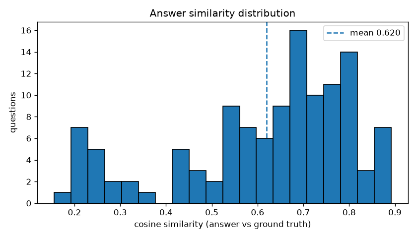
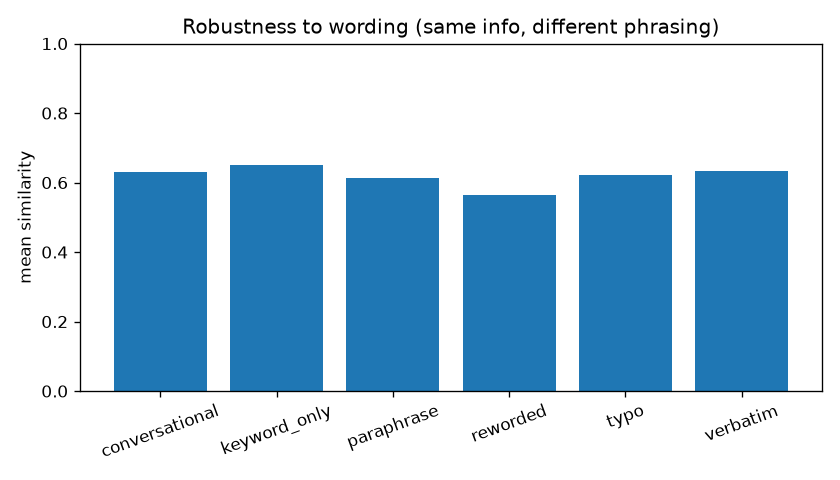
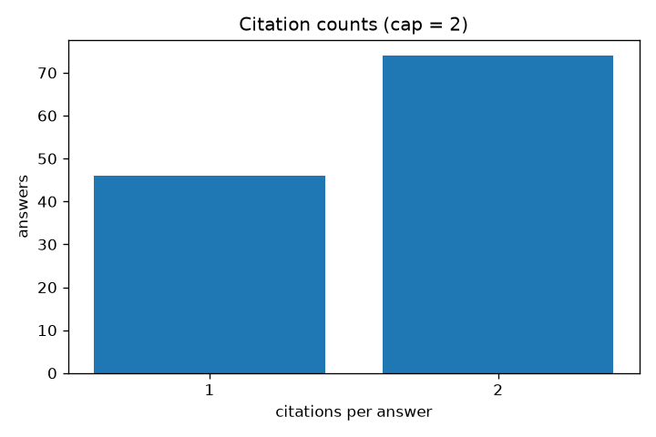
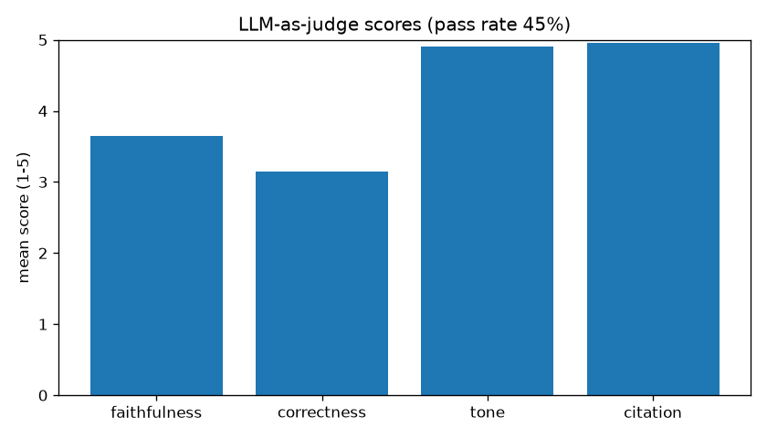

Work Credit RAG — Agent Behaviour & Benchmark Report
Persian credit-scoring RAG agent · 120-question bank (6 wording formats) ·
model unsloth/gemma-4-31B-it-GGUF · run 2026-09-09
Sources: parent repo · bench JSON (Q8) · judge JSON (Q8) · bench JSON (Q4) · judge JSON (Q4)
1. Summary
v2 (Q4, pre-tweak)
0.602
mean similarity
0.685
median similarity
sim>0.576%
sim>0.743%
mean citations1.442
max citations2
finish stop120/120
judge pass49%
v3 (Q4, tweaked prompt)
0.621
mean similarity
0.691
median similarity
sim>0.579%
sim>0.744%
mean citations1.617
max citations2
finish stop120/120
judge pass47%
v4 (Q8, tweaked prompt)
0.620
mean similarity
0.675
median similarity
sim>0.578%
sim>0.742%
mean citations1.617
max citations2
finish stop120/120
judge pass45%
2. Run comparison
| metric | v2 (Q4, pre-tweak) | v3 (Q4, tweaked prompt) | v4 (Q8, tweaked prompt) |
|---|---|---|---|
| n | 120 | 120 | 120 |
| mean_similarity | 0.6018 | 0.621 | 0.6197 |
| median_similarity | 0.6846 | 0.6912 | 0.6748 |
| similarity>0.5 | 0.7583 | 0.7917 | 0.7833 |
| similarity>0.7 | 0.4333 | 0.4417 | 0.425 |
| mean_citations | 1.442 | 1.617 | 1.617 |
| max_citations | 2 | 2 | 2 |
| low_similarity_lt0.5 | 29 | 25 | 26 |
| errors | 0 | 0 | 0 |
| finish_reasons | {"stop": 120} | {"stop": 120} | {"stop": 120} |
3. Answer statistics
Similarity distribution (answer vs ground truth)

Wording robustness (same info, different phrasing)

Citation counts (cap = 2)

LLM-as-judge scores

4. QA samples (live)
| question | agent answer (truncated) | citations | finish |
|---|---|---|---|
| سلام | سلام، در خدمت شما هستم. چگونه میتوانم به شما کمک کنم؟ | 1 | stop |
| اعتبارسنجی چیست؟ | اعتبارسنجی فرآیندی است که در آن از دادههای اعتباری برای تحلیل ریسک، تعیین امتیاز اعتباری و ارائه خدمات مشاورهای استفاده میشود [2]. همچنین در موارد خاص، مانند بررسی چکهای ضمانت، استفاده از گزارشهای اعتبارسنجی به عنوان یک اقدام استاندارد برای کاهش ریسک وصول نشدن مبالغ تسهیلات به کار میرود [3]. در مجموع، اعتبارسنجی ابزاری برای ارزیابی دقیق ریسک مالی و تصمیمگیری informed در granting تسهیلات است. | 2 | stop |
| امتیاز اعتباری چگونه محاسبه میشود؟ | محاسبه امتیاز اعتباری بر اساس ترکیبی از عوامل مختلف صورت میگیرد که اولویت آنها به شرح زیر است: * **عوامل کلیدی:** در محاسبه امتیاز چک، سوابق مربوط به چکها نقش تعیینکنندهای دارند [3]. * **سایر عوامل مؤثر:** مواردی نظیر سوابق تسهیلاتی، تراکنشها، وضعیت مالیاتی و سن فرد نیز در محاسبه امتیاز اثرگذار هستند، هرچند تأثیر آنها در مقایسه با سوابق چک کمتر است [2، 3]. به طور کلی، امتیاز اعتباری از تحلیل جامع سوابق مالی و تعهدات فرد استخراج میشود. | 1 | stop |
| چگونه میتوانم درخواست حذف سابقه منفی قدیمی از گزارش اعتباری شرکت را ثبت کنم؟ | در مورد حذف سوابق منفی در گزارش اعتباری، نکته زیر حائز اهمیت است: * سوابق منفی تا مدت پنج سال در سیستم باقی میمانند و پس از گذشت این بازه زمانی، بهطور خودکار حذف میشوند [1]. بنابراین، برای حذف سوابق قدیمی نیازی به ثبت درخواست نیست و این فرآیند پس از پنج سال انجام میشود. | 1 | stop |
| ببخشید، مسئولیت بانکها در قبال گزارش اعتباری چیست؟ | مسئولیت بانکها در فرآیند اعتبارسنجی شامل موارد زیر است: * **تأمین و ارائه دادهها:** بانکها نقش محوری و اساسی در جمعآوری، تجمیع و ارائه اطلاعات دارند که این دادهها در تعیین رتبه نهایی اعتباری تأثیرگذار هستند [1]. * **دقت در ارسال اطلاعات:** موسسات اعتباری موظفاند دادههای ارسالی را بهصورت دقیق، بهروز و مطابق با استانداردهای تعیینشده ارائه دهند [2]. در مجموع، بانکها متولی اصلی فراهم کردن زیرساختهای اطلاعاتی برای محاسبه دقیق رتبه اعتباری کاربران هستند. | 2 | stop |
| تفاوت رتبه اعتباری با امتیاز اعتباری چیست؟ | در مورد تفاوت رتبه و امتیاز اعتباری، نکات زیر قابل توجه است: * **رتبه اعتباری:** معیارهای پذیرش و شرایط مربوط به رتبه اعتباری در هر بانک متفاوت است و تعیین آن در اختیار هر بانک میباشد [2]. * **محاسبه در صورت نبود سابقه:** در گزارشهای مربوط به چک، اگر فردی طی ۵ سال گذشته هیچ سابقه چک پاسشده یا برگشتی نداشته باشد، هیچ رتبه یا امتیاز اعتباری برای او محاسبه نمیشود و فاقد رتبه اعتباری تلقی میگردد [5]. به طور کلی، رتبه اعتباری بر اساس معیارهای متغیر هر بانک ارزیابی میشود و برای افرادی که سابقه چک ندارند، هیچیک از این دو شاخص محاسبه نمیشود. | 2 | stop |
5. Findings
Faithfulness & correctness
- Dominant failure mode is false abstention (~18% pre-tweak): the agent said “no answer found” despite 5 retrieved chunks. No polarity flips (بله↔خیر) observed — failures are omission, not inversion.
- Mid-range answers sometimes pad with retrieved-but-unasked context (1–2 extra bullets not in ground truth).
- After the abstention-threshold prompt tweak, previously abstained questions (e.g. «چرا امتیاز اعتباری… مهم است؟») return grounded answers with 1 citation.
Citations
- 100% of answers cite ≤ 2 sources; metadata returns only chunks actually referenced
[n]in the text (fallback: top-1 chunk). - No invalid markers observed (no
[0]/[6+]); one pre-tweak answer cited 3 markers in text while metadata correctly truncated to 2.
Tone & identity
- Answers are Persian-only, professional, and structured (intro + 1–3 points + closing). The agent answers as the Iranian credit scoring company AI agent.
- Greeting rule tightened: «ببخشید» no longer triggers a سلام.
Wording robustness
rewordedis weakest (mean ~0.55, 30% below 0.5);keyword_onlystrongest (~0.65). Retrieval returns 5 chunks in all cases — failures come from 5 distractors, not empty retrieval.- Fix applied: light Persian normalization + politeness-filler strip in
retrieve.pybefore KB search.
Guardrails
- Two false positives found by the benchmark and fixed:
profanity:کردن(common verb in swear list → removed bare forms, vulgar phrases like «کس کردن» still blocked) andhate:پلیس(police records are a legit credit data source → allowlisted). - Blocked-answer rate went 5/120 → 0/120.
Memory
- The agent is stateless: it does not remember previous turns, neither across requests nor within multi-turn
messages(only the latest user message is used as the query). Short-term history is not implemented in the MVP graph.
6. Lowest-similarity cases
| question | sim | format | answer (truncated) |
|---|---|---|---|
| آیا میتوان گزراشهای مصرف را بهصورت خودکار در سیستم خود ذخیره کرد؟ | 0.156 | typo | بر اساس اطلاعات موجود در پایگاه دانش، پاسخی برای این سوال یافت نشد.… |
| لطفاً بگویید در عمل آیا در مصرف بهصورت خودکار میتوان خود کرد؟ . اگر | 0.163 | reworded | با توجه به اطلاعات موجود، در صورت بروز خطا در تراکنش یا شارژ اشتباه، برای بازگشت وجه نیاز است با شماره ۰۲۱۴۱۵۲۲۲۲۲ تماس بگیرید تا اقدامات لازم انجام شود [3]. بن… |
| راستی، آیا میشه گزارشهای مصرف را بهصورت خودکار در سیستم خود ذخیره ک | 0.199 | conversational | در رابطه با ذخیرهسازی دادهها، نکات زیر قابل توجه است: * تأمینکنندگان داده موظف هستند رکوردهای ارسالی را در پایگاه داده خود نگهداری کنند تا در صورت بروز هرگون… |
| آیا میتوان گزارشهای مصرف را بهصورت خودکار در سیستم خود ذخیره کرد | 0.204 | verbatim | در رابطه با ذخیرهسازی دادهها، نکات زیر قابل توجه است: * تامینکنندگان داده موظف هستند رکوردهای ارسالی را در پایگاه داده خود نگهداری کنند تا در صورت بروز هرگون… |
| تفاوت شرکت شما با رقبایتان (شرکت مرآت یا حافظ سامان ایرانیان، اسم رقبا | 0.226 | typo | بر اساس اطلاعات موجود در پایگاه دانش، پاسخی برای این سوال یافت نشد.… |
| در این باره بگویید که طبق متن تفاوت شرکت شما (شرکت مرآت یا حافظ ایرانی | 0.226 | reworded | بر اساس اطلاعات موجود در پایگاه دانش، پاسخی برای این سوال یافت نشد.… |
| تفاوت شرکت شما حافظ رقبایتان (شرکت مرآت یا با سامان ایرانیان، اسم رقبا | 0.226 | paraphrase | بر اساس اطلاعات موجود در پایگاه دانش، پاسخی برای این سوال یافت نشد.… |
| تفاوت شرکت شما با رقبایتان (شرکت مرآت یا حافظ سامان ایرانیان، اسم رقبا | 0.226 | verbatim | بر اساس اطلاعات موجود در پایگاه دانش، پاسخی برای این سوال یافت نشد.… |
7. Judge failures (sample)
| question | judge scores | rationale |
|---|---|---|
| راستی، آیا میشه گزارشهای مصرف را بهصورت خودکار در سیستم خود ذخیره ک | f2 c1 t4 | The agent completely missed the core answer regarding automatic storage and access control, instead discussing data provider obligations. |
| میخواهم بدانم آیا پس از امضای توافقنامه شرکت به حضور فیزیکی نماینده | f5 c1 t5 | The agent failed to retrieve the answer provided in the ground truth, resulting in a 'not found' response. |
| ممکن است توضیح دهید که بر اساس اسناد آیا مالی اعتبارسنجی خروجی در میگ | f1 c1 t5 | The agent completely misunderstood the question and provided an irrelevant answer about AI models instead of addressing financial judgments. |
| لطفاً بگویید در عمل اگر در زلزله یا تسویه بدهی بلایای آسیب میبینه؟ . ا | f2 c2 t5 | The agent describes bank exemptions, whereas the ground truth specifies a process of justifying delays via organizations and updating the credit report. |
| تفاوت شرکت شما با رقبایتان (شرکت مرآت یا حافظ سامان ایرانیان، اسم رقبا | f5 c1 t5 | The agent failed to retrieve the available information from the ground truth and provided a 'not found' response. |
| محکومیت غیر مالی قوه قضاییه عدم تاثیر | f1 c1 t4 | The agent contradicts the ground truth by stating financial convictions have no effect, whereas the ground truth explicitly states only financial convictions ar |
| شاخص اعتماد ریسک پایین موسسات مالی خوش حسابی | f2 c2 t5 | The agent provides general risk management methods instead of defining the 'Credit Score' (رتبه اعتباری) as specified in the ground truth. |
| آیا اطلاعات شخصی من در گزراش اعتباری نمایش داده میشود؟ | f2 c2 t5 | The agent fails to answer the specific question about personal identity information, instead discussing data retention and provider filters. |
8. Reproduce
python eval/run_llm_answer_benchmark.py --out eval/results/llm_answer_benchmark_v3.json python eval/run_llm_judge.py eval/results/llm_answer_benchmark_v3.json --out eval/results/llm_judge_v3.json python eval/make_plots.py --bench eval/results/llm_answer_benchmark_v3.json --judge eval/results/llm_judge_v3.json --outdir eval/results/plots --tag v3 python eval/build_report_site.py